自然雷的目标选择
自然雷先检查引雷针上方是否露天，再比较针头的材料优先级；前两项相同时，较高的引雷针优先。玩家通过轨道升降、更换针头和安装位置来改变目标。
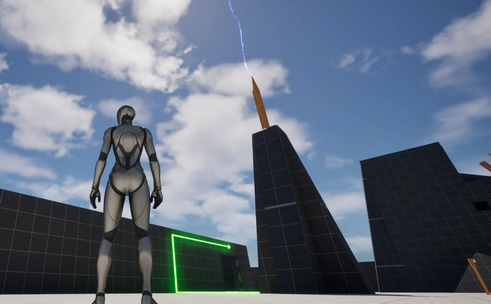
原创关卡 / UE 5.5
引雷、导电与空间通行
开发时长14 天
玩家通过调整引雷条件和导电线路解开神殿机关，在后半段利用可移动引雷针规避敌人攻击，最终把 Boss 的雷击转化为炮台的反击能源。
PROJECT WALKTHROUGH
以下重点介绍三个方面：
01 / RULES
自然雷先检查引雷针上方是否露天，再比较针头的材料优先级；前两项相同时，较高的引雷针优先。玩家通过轨道升降、更换针头和安装位置来改变目标。

引雷针获得能量后，可以直接激活接收机关，也可以通过导电机关的电弧继续传递。导电机关每次旋转 90 度。绿色接收机关充能一次便保持开启，蓝色接收机关需要持续供电。
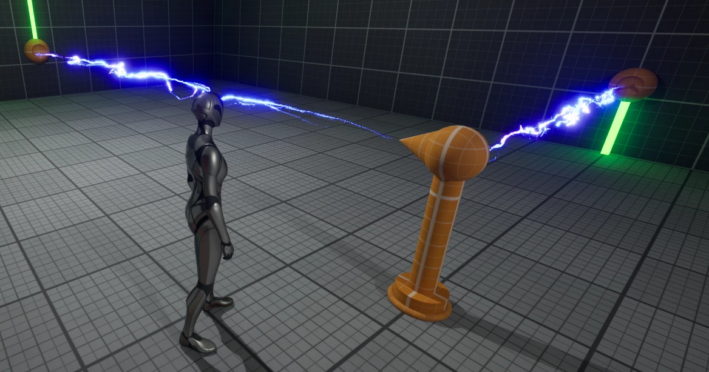
玩家同一时间只能持有一个机关构件。可移动引雷针必须安装进插槽才能生效，拿在手中或交换放在地面上都不能提供保护。
02 / TEACHING
先让玩家认识一个变量，再增加优先级和操作方式；进入后续区域后，再把已经学过的条件组合起来。
教程先使用同类引雷针，让玩家通过按钮改变轨道引雷针的高度。相同材料、同样露天时，升高到竞争目标上方才能改变雷击结果。槽位指示灯显示轨道已经移动到哪一档。
这一关先让玩家把自己的操作、高度变化和雷击结果联系起来。
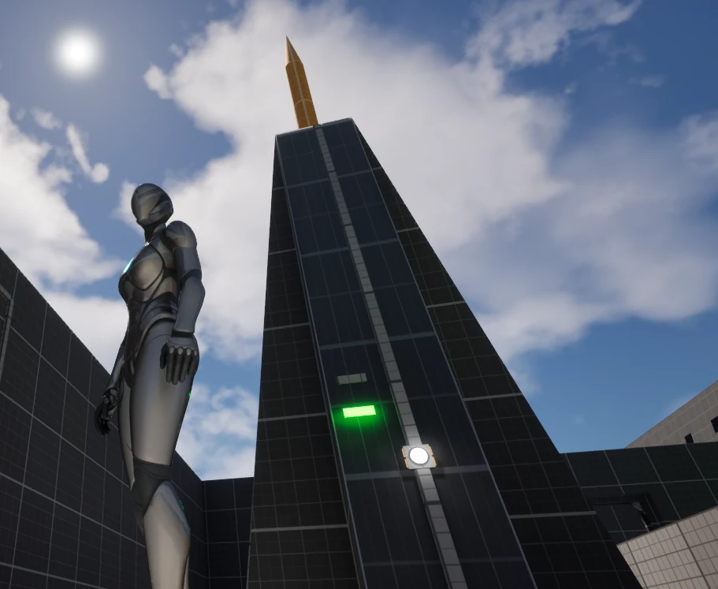
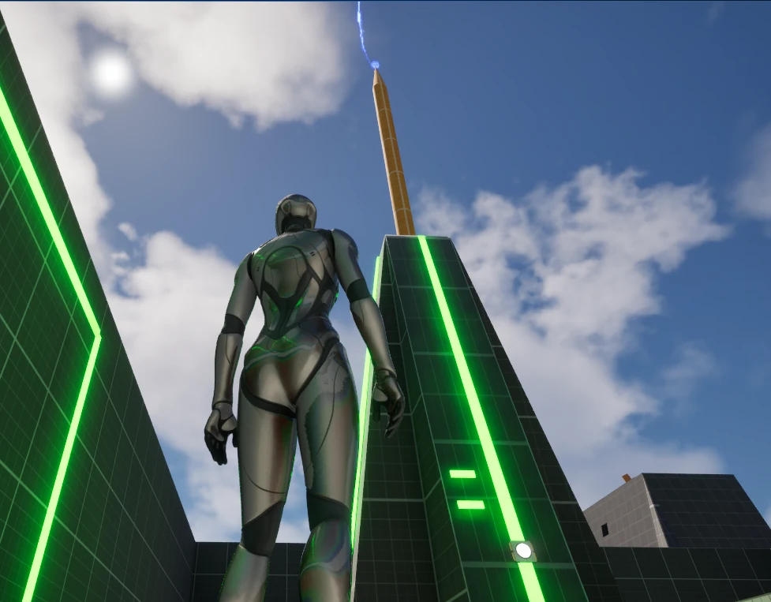
接着放入材料优先级不同的目标，让较低但更强的针头获得雷击。玩家需要在刚学会的高度规则上，再理解材料优先于高度，而不是把结果看成随机。
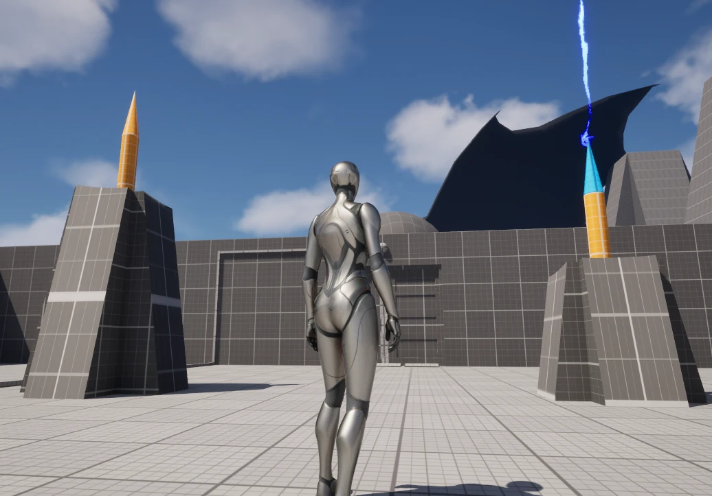
理解材料作用后，玩家获得取下、安装和交换针头的操作。此时需要把强引雷针头装到连接正确机关的针体上，主动创造通关条件。
后续塔楼加入旋转、搬运导电机关和线路阻路，废墟再加入天空遮挡与可移动引雷针，逐步增加组合，而不是一次开放所有操作。
03 / SPATIAL PUZZLES
塔楼把连线结果放进可行走的空间里。玩家除了让电到达目标，还需要考虑操作后自己能否到达出口或奖励。
第一个以阻路为核心的谜题中，玩家需要激活机关来开启墙后的宝箱，但转动机关后，电弧会挡住通往宝箱的位置。解法是同时利用机关控制的两扇门，开出一条绕行路线。
因此，接线是否成功和玩家能否走到目标，需要一起考虑。
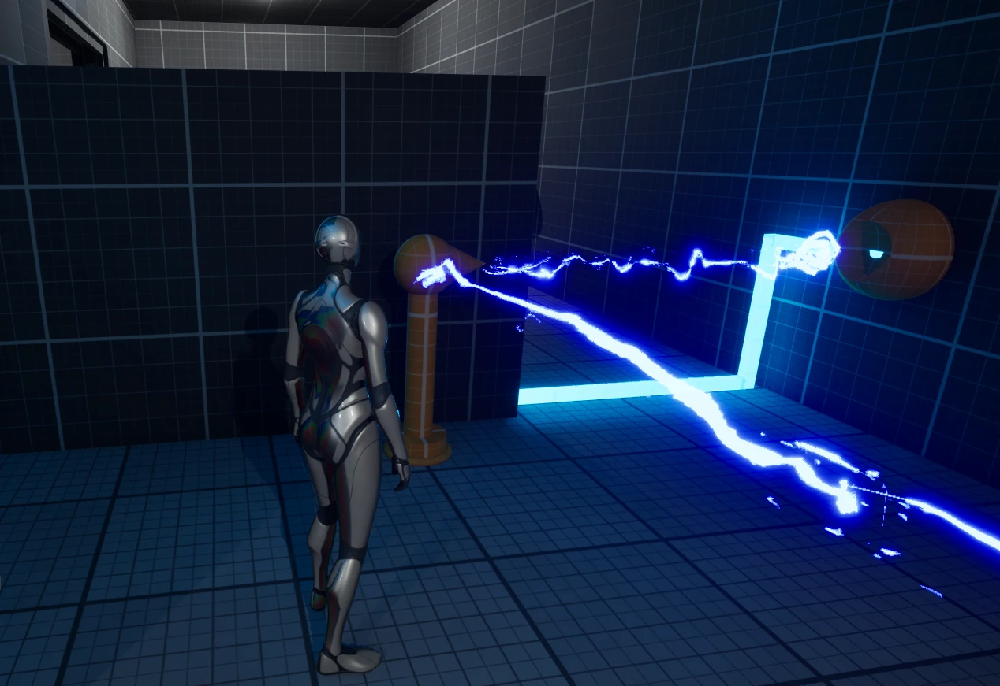
仅在路上放一条电弧还不够：如果玩家能从机关另一侧操作，就可以轻易绕过阻挡。我在部分导电机关侧面放置墙体，或利用平台边缘限制站位，让玩家必须从会受到线路影响的一侧操作。
下方两段视频展示同一谜题的不同操作状态，镜头位置不同。
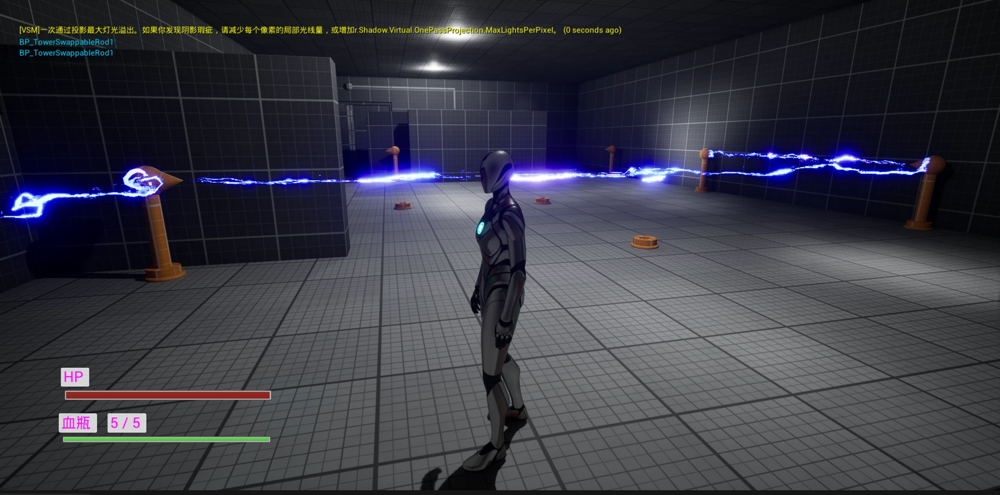
导电机关仍然每次转动 90 度，但我把部分机关的初始朝向预设为偏转 45 度，并按斜向连接关系安排插槽。玩家沿用已有操作，也能组成不同于横平竖直的线路。
先通过图中蓝色路线开启一楼的门，再更换机关使用的插槽、调整朝向，让第二条线路穿过已打开的门，连接门后的机关。同一空间需要在两个阶段重新布置。
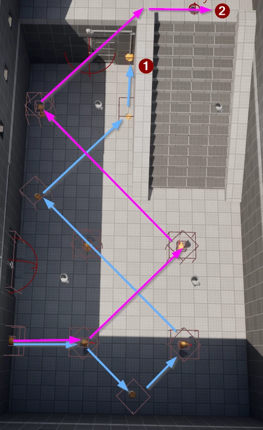
流程长图 · 点击图片查看完整尺寸 ↗
这个谜题先在纸上规划线路，再用九个方形结构分割格子，在节点放置插槽、用障碍限制可选路线，并提供有限数量的导电机关。俯视图用于解释解法，实际游玩则需要玩家在第三人称视角中逐步确认连接位置。
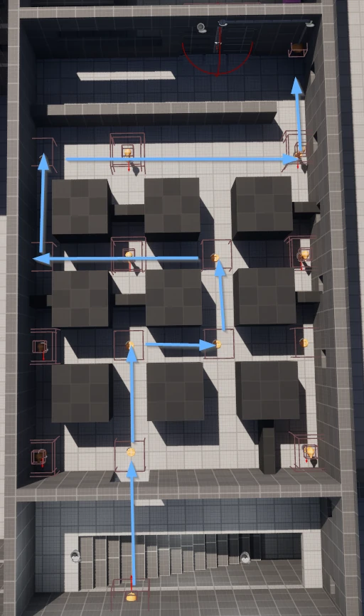
流程长图 · 点击图片查看完整尺寸 ↗
04 / COMBAT APPLICATION
玩家操作的仍是熟悉的构件，但需要解决的问题从满足自然雷条件，变成在攻击到来前创造受保护的位置。
自然雷会比较高度、材料和天空暴露；敌人的特殊雷击则在蓄力后锁定玩家。玩家站在已安装引雷针的有效范围内，才能把攻击引走。离开范围，雷击仍会击中玩家。
收缩光圈与文字提示交代攻击时间，引导玩家把之前用于解谜的构件当作防御工具。
第三道封印解除后，Boss 已经能够攻击前进通道上的玩家。通道沿途布置多个插槽，玩家携带一根可移动引雷针，在约十秒的攻击冷却与蓄力间隙内前进。
拿起引雷针便失去保护，靠近旧插槽也无法保护整条路线。玩家需要在雷击前停下，把针安装到下一处插槽，再等待攻击结束后继续前进。
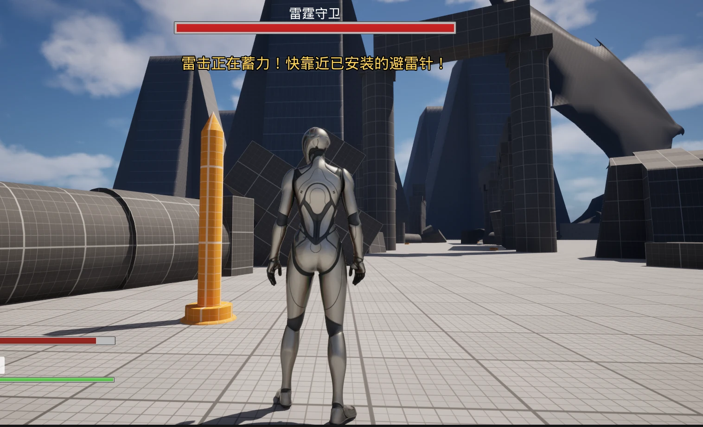
Boss 场地设有三个炮台及对应插槽。把雷击引向已安装的引雷针后，能量会传入对应炮台；多次充能后自动发射，削减 Boss 血量。
发射后的炮台进入冷却，不能继续充能。玩家因此需要拔起引雷针，转移到其他可用炮台。绿、黄、红指示灯分别表示可用、充能中与冷却状态。
本 Demo 的 Boss 只使用特殊雷击，胜利依靠炮台完成，集中展示解谜构件与战斗机制的结合。
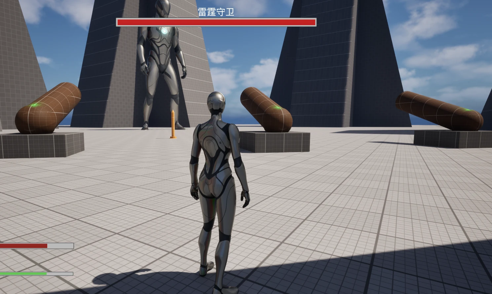
05 / ARCHITECTURE & PROGRESSION
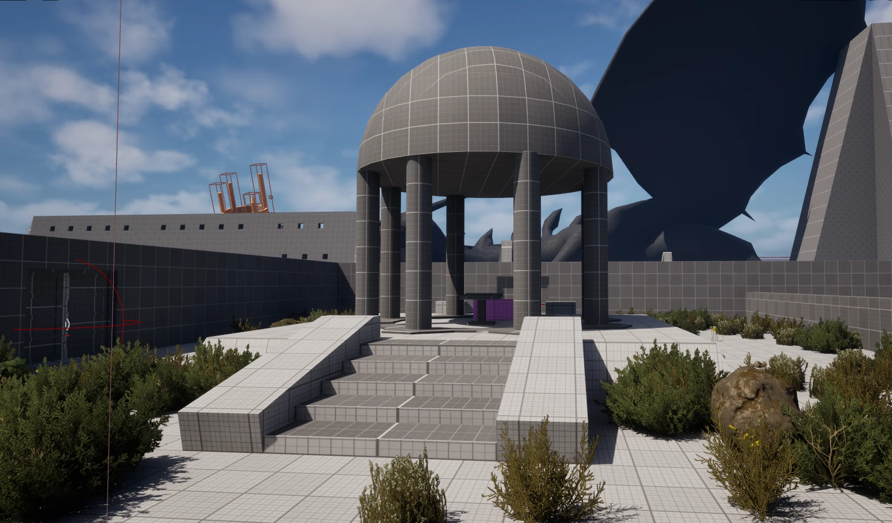
引雷针必须露天，而神殿内的机关需要电能，这个条件促成了中央天井与四周建筑的布局：雷电在中央高塔被引入，再输送到室内的解谜区域。高塔上的专用针头也成为各阶段之间反复返回的交互位置。
建筑参考低矮、厚重的埃及神殿，让引雷设施在轮廓上保持突出，并与常年雷暴中的石质遗迹设定相配。
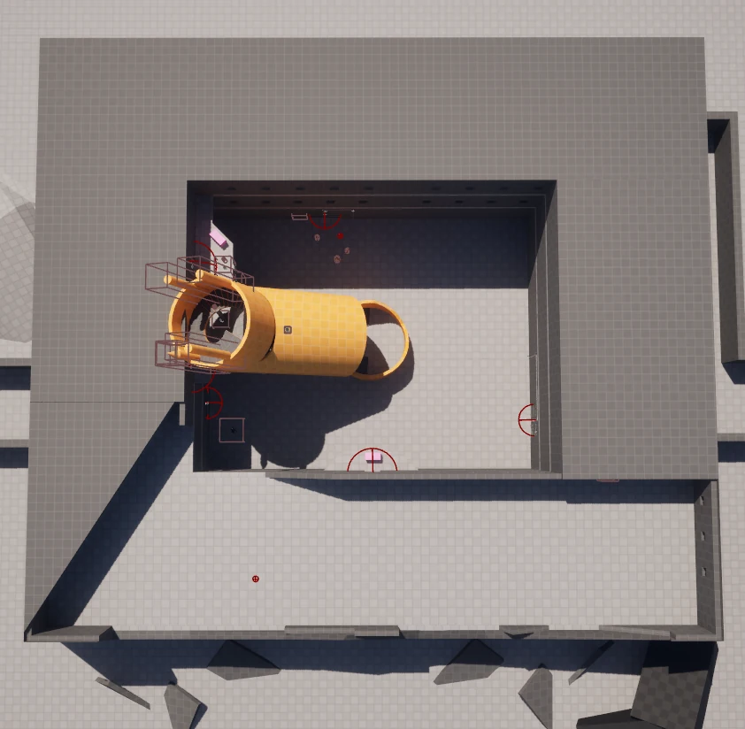
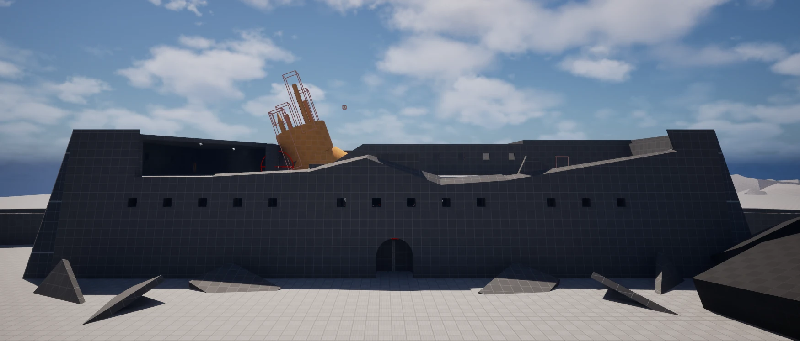
主线从中央广场进入庭院教程，再经侧路进入塔楼、废墟和 Boss 前进通道。三个区域各解除一道封印。塔楼包含较多谜题，因此把封印放在完成约一半内容的位置，让玩家可以继续主线，也可以留下或返回探索剩余关卡。
在白盒庭院基础上，我设想用祭坛纹饰、设备维修痕迹、花园与生活用品说明先民怎样利用雷电。引雷设施既是信仰符号，也保护生活区域；研究区保留装置原理刻纹，为后续机关提供环境线索。这部分是扩展设计方案，尚未按图完整制作。
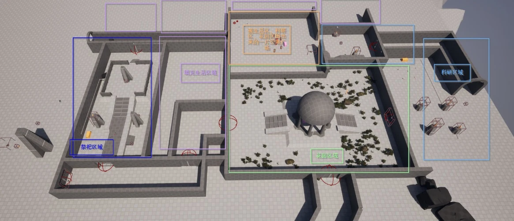
06 / DESIGN DECISIONS
最初所有引雷针共用雷源，新增机关就必须比较前面所有目标，容易迫使后续关卡越做越高。我用 Strike Zone 限定每个谜题参与竞争的引雷针，并在完成后锁定该谜题状态，避免互相干扰。
单纯比较高度的变化有限，也限制了从高处观察、向低处布置机关的可能。因此我保留高度作为教学规则，把更多谜题放在塔楼，通过电弧阻路、插槽位置和线路重组增加变化。
曾考虑让可移动敌人成为解谜电源，但敌人位置、攻击选择和行为控制会增加制作量。最终采用 Boss 远程通道与炮台战，复用同一套特殊雷击，使战斗内容集中在引雷针的应用上。
中控台开启的门不在玩家视野内，大型引雷针也需要频繁抬头观察。后续应加入短镜头展示关键变化，减少玩家操作后不知道哪里发生变化的情况。
我负责关卡布局、谜题设计与机关蓝图实现，制作过程中使用 AI 辅助学习与排错。生命、血瓶、HUD、篝火等基础系统由我的前作迁入，再适配本项目交互。
第三方资产包括 Epic 第三人称模板、Blocking Starter Pack、Free Spline VFX、Dragon for Boss Monster、Item Pickup VFX、KEStatues Lite、Rock Environment Pack 和 Light Foliage。电弧动态端点、阻挡及机关交互按本项目需要调整。